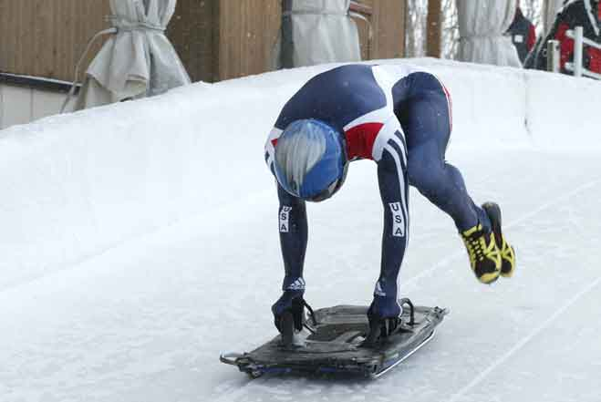
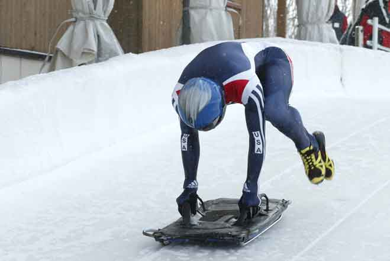

Санный спорт
Одним из самых быстрых и загадочных для публики видов спорта, который будет представлен в программе зимних Олимпийских игр в Сочи, можно считать санный спорт.
Этот вид состязаний представляет из себя спуск на одноместных или двухместных санях по заранее подготовленной трассе.
Дебютным годом санного спорта на зимних Олимпийских играх считается 1964 (Инсбрук, Австрия). Включение этого вида спорта в олимпийскую программу омрачило ужасное известие – незадолго до начала соревнований во время тренировки с трассы вылетел и разбился насмерть англичанин польского происхождения Казимеж Кей-Скжипески. В связи с этим предпринимались попытки запретить саночникам и бобслеистам выступать в Инсбруке на новой искусственной трассе, но всё было тщетно. Первую олимпийскую медаль увез домой Томас Келлер из объединенной команды Германии.
Россияне присоединились к международному санному движению в 1972 году на XI Олимпийских зимних играх в Саппоро. Единственную золотую медаль в копилку сборной России принесла Вера Зозуля на играх в Лейк-Плесиде в 1980 году за всю историю выступлений наших спортсменов.
Интересный факт
Во время заезда сани развивают скорость до 140 км/ч.
Турниры по санному спорту проводятся на двух типах трасс: саночные и для натурбана (разновидность санного спорта, спуск по естественным склонам, в программу Олимпийских игр еще не включен). На многих трассах лед искусственно охлаждают, и большинство из них находятся в альпийских странах. Российские спортсмены тренируются и выступают в Московской области в деревне Парамоново, но чаще всего в латвийской Сигулде, где созданы все условия для тренировочного процесса. К Олимпийским играм в Сочи построили современную санно-бобслейную трассу – Центр Санного Спорта «Санки» недалеко от Красной Поляны.
Санный спорт – технически очень сложный вид спорта. Управление санями производится при помощи изменения положения тела. Спортсмены при этом располагаются на санях на спине, ногами вперед. Правила очень просты – побеждает тот, кто пройдет трассу длиной 800-1200 метров за наименьшее время. Спортсмен при этом обязан финишировать вместе с санями, иначе он будет дисквалифицирован. Перед стартом всегда проверяется температура полозьев саней, которая должна находиться в определенном диапазоне, зависящем от температуры воздуха.
Для одноместных экипажей проводится четыре соревновательных заезда, для двухместных – два. Победителя определяют не по лучшей попытке, а по сумме времени всех заездов. Во время заезда скорость саней может развиваться, только представьте себе, до 140 км/ч.
На Олимпийских зимних играх соревнования по санному спорту проводятся в следующих дисциплинах:
1) одноместные сани (мужчины);
2) одноместные сани (женщины);
3) двухместные сани (мужчины);
4) эстафета – одноместные сани (мужчины), одноместные сани (женщины), двухместные сани (мужчины).
Эти же виды программы будут представлены и в Сочи. Надежды России в санном спорте на домашней Олимпиаде связаны с серебряным призером игр в Турине Альбертом Демченко и Татьяной Ивановой, обладательницей двух серебряных наград на чемпионате Европы в Альтенберге в 2012 году. Оба спортсмена выступают на одноместных санях.
Традиционно фаворитами в соревнованиях по санному спорту являются представители Германии, Австрии и Италии. Сейчас наши саночники прилежно готовятся к главному турниру четырехлетия, чтобы побороться за олимпийские медали с мировыми лидерами. Будем надеяться, что домашние стены помогут нашим спортсменам ворваться на сочинский Олимп.
{kind=link}
{kind=link}
{kind=link}
{kind=link}